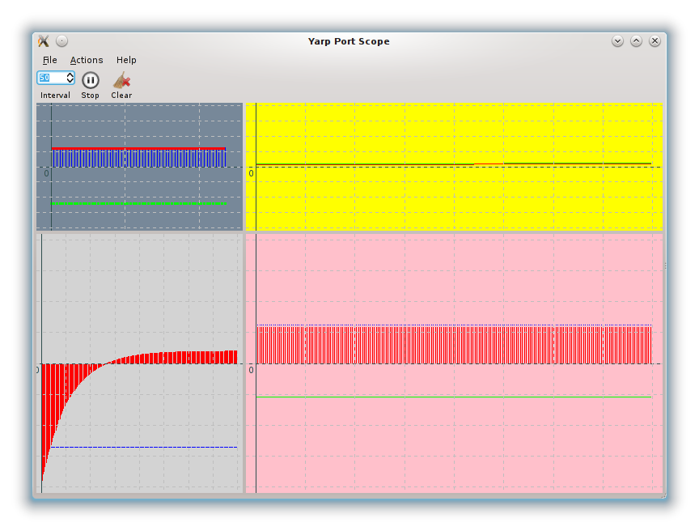

Description
This simple graphical user interface allows one to visualize on a plot the content of a YARP port. The input port is assumed to contain a vector of numbers.
- The main window can contain one or more plots.
- Each plot can contain one or more graphs.
- Each graph displays one pair [remote port, index].
How to initialize the yarpscope
yarpscope supports two different modes: simple mode (one remote, one graph) and XML mode (multiple remotes, multiple graph).
The following options are common to both modes:
--help Print this help and exit.
--title [string] Title of the window (default "YARP Port Scope")
--x [uint] Initial X position of the window.
--y [uint] Initial Y position of the window.
--dx [uint] Initial width of the window.
--dy [uint] Initial height of the window.
--interval [int] Initial refresh interval in milliseconds. (default = 50ms)
Simple Mode
Simple mode can be used for running yarpscope from the command line, connecting to a single remote and displaying multiple plots on a single graph.
The syntax is
--remote [string] Remote port to connect to.
--carrier [string] YARP Carrier used for connections (default "mcast")
--persistent, Make normal or persistent connections (default persistent)
--no-persistent
--index [...] Index(es) of the vector to plot.
It can be an [uint] or an array of [uint]s
--plot_title [string] Plot title (default = remote)
--min [float] Minimum value for the Y axis (default -100)
--max [float] Maximum value for the Y axis (default 100)
--size [uint] Plot size (Number of
samples to plot) (
default 201)
--bgcolor [string] Background color.
--color [...] Graph color(s).
Depending on index it must be a [string] or an array of [string]s.
--type [...] Graph type(s). Accepted values are "points", "lines" and "bars" (default = "lines")
Depending on index it must be a [string] or an array of [string]s.
--graph_size [...] Graph size(s) (thickness of the points) (default = 1)
Depending on index it must be a [uint] or an array of [uint]s.
XML Mode
XML mode can be used to start yarpscope by passing an xml that contains the configuration of the window. It can connect to multiple remotes and display one or more graphs in a grid. To invoke XML mode, yarpscope must be started passing the –xml parameter. The file is located using the YARP default policy.
Here is an example of portscope description file in XML format:
<?xml version="1.0" encoding="UTF-8" ?>
<portscope rows="3" columns="3" carrier="mcast">
<plot gridx="0"
gridy="0"
hspan="1"
vspan="1"
title="Plot 00"
size="60"
minval="-100"
maxval="100"
bgcolor="LightSlateGrey">
<graph remote="/icubSim/head/state:o"
index="0"
color="Red"
title="Graph 0"
type="lines"
size="3" />
<graph remote="/icubSim/head/state:o"
index="1"
color="Green"
title="Graph 1"
size="3"
type="points" />
<graph remote="/icubSim/head/state:o"
index="2"
color="Blue"
title="Graph 2"
size="1"
type="bars" />
</plot>
<plot gridx="0"
gridy="1"
hspan="1"
vspan="2"
title="Plot 01"
minval="-100"
maxval="100"
bgcolor="LightGrey">
<graph remote="/icubSim/right_arm/state:o"
index="0"
color="Red"
title="Graph 0"
type="bars" />
<graph remote="/icubSim/right_arm/state:o"
index="1"
color="Green"
title="Graph 1"
type="lines" />
<graph remote="/icubSim/left_arm/state:o"
index="0"
color="Blue"
title="Graph 2"
type="points" />
<graph remote="/icubSim/left_arm/state:o"
index="1"
color="Magenta"
title="Graph 2"
type="points" />
</plot>
<plot gridx="1"
gridy="0"
hspan="2"
vspan="1"
title="Plot 10"
minval="-100"
maxval="100"
bgcolor="Yellow">
<graph remote="/icubSim/right_leg/state:o"
index="0"
color="Red"
title="Graph 0" />
<graph remote="/icubSim/right_leg/state:o"
index="1"
color="Green"
title="Graph 1" />
<graph remote="/icubSim/right_leg/state:o"
index="2"
color="Blue"
title="Graph 2" />
</plot>
<plot gridx="1"
gridy="1"
hspan="2"
vspan="2"
title="Plot 11"
minval="-100"
maxval="100"
bgcolor="Pink">
<graph remote="/icubSim/torso/state:o"
index="0"
color="Red"
title="Graph 0"
type="bars" />
<graph remote="/icubSim/torso/state:o"
index="1"
color="Green"
title="Graph 1"
type="lines" />
<graph remote="/icubSim/torso/state:o"
index="2"
color="Blue"
title="Graph 2"
type="points" />
</plot>
</portscope>
This xml will produce a GUI similar to this:

Details:
<portscope rows="3" columns="3" carrier="mcast">
- rows and columns is the size of the main table. (Note: rows * columns does not necessarily corresponds to the number of plots, since for each plot you can set hspan and vspan). Also if your grid is bigger than what you declare here, it is resized automatically [optional].
- "carrier" is the carrier that will be used for connections (default = mcast) [optional].
Now declare a plot:
<plot gridx="0"
gridy="0"
hspan="1"
vspan="1"
title="Plot 00"
size="60"
minval="-100"
maxval="100"
bgcolor="LightSlateGrey">
- gridx and gridy are the position in the main table of the portscope. gridx corresponds to the column (the first columns index is 0), and gridy is corresponds to the row. Columns and rows are indexed from zero, therefore (0,0) is the top-left plot [mandatory].
- hspan and vspan are the number of cells in the main table that the plot will take [optional, default = (1,1)].
- title is the title of the plot [optional, currently unused].
- size is the number of samples that will be shown (i.e. the length of the X axes [optional, default = 201].
- minval and maxval are the minimum and maximum values on the Y axes [optional, default -100, 100].
- bgcolor is the color of the background for the plot. Color names (white, gray, etc.) and RGB values (#FFFFFF, ecc) are accepted [optional, default "white"]
In each plot you can have one or more graphs:
<graph remote="/icubSim/head/state:o"
index="0"
color="Red"
title="Graph 0"
type="lines"
size="3" />
- remote is the YARP port where the data is read. For each port used in the xml file, yarpscope will open a port $YARP_PORT_PREFIX/yarpscope/<remote> and connect it to the remote port
- index is the index of the data to graph.
- color is the color of the plot. Color names (white, gray, etc.) and RGB values (#FFFFFF, ecc) are accepted [optional, default "black"]
- title is the name of the plot as it will appear on the legend [optional, currently unused].
- type is the type of graph. It can be:
- points
- lines
- bars [optional, default "lines"]
- size depending on type, is the thickness of each point, of the line or of the bar [optional, default 1].